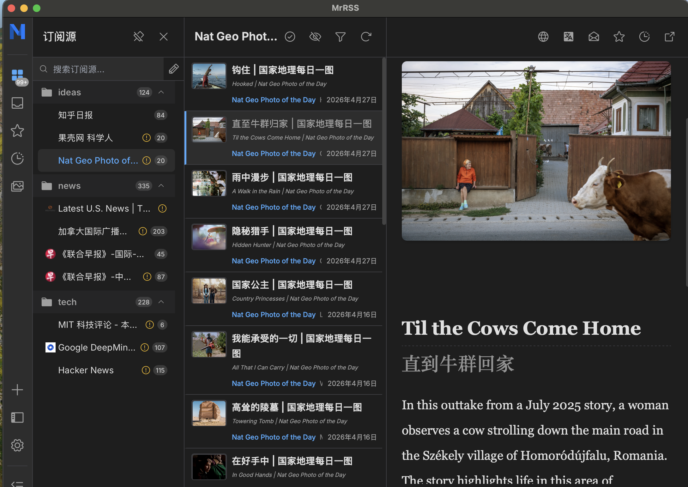

I started messing with RSS the day before yesterday. The trigger was a craving for clean, diverse, high-value information and a way to break the habit of mindlessly scrolling—no more “panning for gold in sewage” on Zhihu. On top of that, I’d just taken a serious beating over clock-data alignment on an FPGA: inputs and outputs were always half a beat early or late. I refuse to let AI do the thinking for me, so the frustration was real and progress was zero; I didn’t want to sacrifice the whole weekend to it, so I pivoted to RSS instead.
Today I finally finished building the full stack—from server to client—and collected most of my feeds. In the end I realized I don’t actually need that many sources: honestly, I can’t understand most finance pieces and was just being swept along by the hype. For politics, I’ve got Lianhe Zaobao in the east, CBC and US News in the west; the rest are largely interchangeable. Tech-wise, MIT Review and Hacker News give me plenty. The only gap is good casual essays. On today’s internet it’s hard to find a large, structured platform for personal expression; the interesting stuff is scattered across individual blogs that are painful to curate. Many book-site feeds on RSSHub have either shut down or turned into sales funnels—an absolute shame. So, over the past two decades our search and delivery tools have grown ever more powerful—browsers, WeChat official accounts, AI—but the ecosystem is more closed than ever; everything we see is platform-driven, not chosen. That’s exactly what RSS is meant to crack: out of the river of three thousand waters, take only the one ladle you truly need.
Still, I don’t want to romanticize RSS as a skeleton key that shatters information cocoons. It isn’t. I don’t believe modern algorithms created the cocoon in the first place. As long as readers have biases and can’t personally verify every primary source, cocoons are inevitable—even if the provider is perfectly neutral. People naturally linger in comfortable echo chambers; before the internet, different newspapers already served different crowds. RSS can’t change human nature; it only makes your feed look cleaner, not fairer or more objective.
Below is the exact setup workflow. Since I built it step-by-step with an agent, I let the agent summarize:
What is RSS?
Why self-host an RSS server?
How to set up the RSS server?
docker run -d \
--name rsshub \
--restart always \
-p 4096:1200 \
-e NODE_OPTIONS="--max-old-space-size=200" \
-e CACHE_TYPE=memory \
-e CACHE_EXPIRE=300 \
-e ACCESS_CONTROL_ALLOW_ORIGIN=false \
--memory=400M \
--memory-swap=400M \
--cpus=0.5 \
--log-opt max-size=10m \
--log-opt max-file=3 \
diygod/rsshub:alpine
How to pick an RSS reader?
All in all, this bare-bones overseas server has been a star performer. Now that I have my own RSS server, it feels like a little victory. Opening MrRSS is like unfolding a newspaper—no algorithmic feeds, every line chosen by me.
Funny story: so many RSS links were throwing 503s that I figured the RSSHub Telegram group would have a fix. I spent my lunch break finally signing up for Telegram—something I’d meant to do since the summer after the 2023 gaokao, but back then SMS codes were a pain and I only ended up with Telegram and Instagram as the two apps that got away. I even uploaded my ID and bank statements to PayPal (privacy –10 000) just to finish registration. Joined the group and… everyone’s just shooting the breeze or spamming ads; the last useful RSS share was two years ago. Facepalm. Between anti-scraping arms races and niche gems shutting down, the RSS scene is on life support. Claims that LLMs can simply aggregate RSS feeds for training data are pure fantasy.
But for me, switching on the laptop—no VPN needed—hitting refresh and seeing divergent East-West takes, breaking news, and quirky morning reads is already enough.
